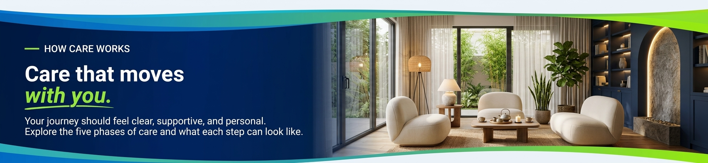

- What to expect: A welcoming, judgment-free conversation.
- What we discuss: Your experiences, current concerns, health history, and what you’d like to work toward.
- The outcome: A shared understanding and an initial care plan.
WELCOME
Mental Health Care for Real Life
Compassionate, evidence-based care that meets you where you are and supports where you’re going.
Partner with YouWe listen first, value your perspective, and build a plan together.
We discuss available options, benefits, potential side effects, and progress together. Your perspective and goals guide each step.
Personalize CareEvidence-based treatment tailored to your goals, needs, and lifestyle.
Your history, symptoms, preferences, daily life, and treatment goals all matter. Family history and pharmacogenetic information may sometimes inform decisions, but are not guarantees of response.
Support Real ProgressPractical, compassionate care that helps you feel more balanced, capable, and in control.
We check what is helping, discuss any concerns, and adjust the plan when appropriate. Progress is reviewed together over time.
Focus on Whole-Person WellnessCare that considers your mental, emotional, and overall well-being.
Care may consider sleep, stress, life circumstances, and daily habits alongside symptoms and clinical history. Medication and supportive tools can be considered when appropriate.
Meet Micah
Micah Craig,
PMHNP-BC
Psychiatric Mental Health Nurse Practitioner
“Thoughtful care, grounded in listening.”
Personalized
Care
Care
Evidence-
Based
Based
Collaborative
Approach
Approach
Whole-
Person Focus
Person Focus

About Micah
Experienced. Compassionate.
Patient-Focused.
Micah provides psychiatric mental health care for adults, with a focus on understanding, respect, and individualized treatment that supports lasting well-being.
Clinical Experience
Over 10 years of total healthcare experience, including comprehensive psychiatric evaluation, medication management, and individualized treatment planning.
Areas of Focus
Depression, anxiety, ADHD, bipolar spectrum, OCD, trauma-related symptoms, sleep and medication complexity.
Treatment Approach
Direct, warm, collaborative, education-forward and informed by clinical progress.

- What to expect: Ongoing check-ins to review progress and adjust care.
- What we discuss: Coping skills, medication effects when applicable, and practical strategies for everyday life.
- The outcome: A care plan that evolves with your needs.
- What to expect: Thoughtful treatment that considers the whole person.
- What we discuss: Medication management when appropriate, supportive counseling, sleep and lifestyle strategies.
- The outcome: Practical tools and a coordinated approach to care.
- What to expect: Regular check-ins with flexible scheduling.
- What we discuss: What is working, what feels difficult, and whether adjustments are needed.
- The outcome: Care that can become less frequent as appropriate.
- What to expect: A plan shaped around your needs and preferences.
- What we discuss: Your goals, life circumstances, and treatment options.
- The outcome: Shared decisions and adjustments as life changes.
CONTACT
Let’s start the conversation.
Schedule an appointment, ask a question, or get more information about our care and services.
Book onlinewith HeadwayBook appointment
Call us(469) 300-1817Call the practice
Email usGeneral questionsEmail the practice
Your first visitKnow what to expect, how to prepare, and what to bring.›
An initial psychiatric evaluation focuses on your history, symptoms, previous treatment, and personal goals. Headway will provide appointment instructions and any required paperwork.
Telehealth accessConvenient, secure virtual appointments from home.›
Telehealth visits may be available in locations where the practice is licensed and the appointment type is suitable. Confirm current availability when booking.
Insurance optionsCheck participating plans and your individual coverage.›
Headway can help you explore plan participation and appointment coverage. Insurance eligibility, benefits, and costs should be verified directly through Headway.
Questions are welcomeReach out—we’re happy to help you get started.›
You can call (469) 300-1817 or email the practice. Please avoid sharing private health details through ordinary email.
GOOD TO KNOW
Frequently asked questions.
Get the details you need before taking the next step.
How do I schedule an appointment?
Visit the Headway booking page for appointment options and next steps.
Can I ask a question before booking?
Yes. For general questions about services and getting started, call (469) 300-1817 or email the practice. Please don't share sensitive health information by email.
Do you offer telehealth?
Telehealth may be available where the practice is licensed and when clinically appropriate. Check current options through Headway.
What insurance do you accept?
Use the Headway booking page to check participating plans and your coverage.
What should I expect at my first visit?
The initial evaluation discusses your concerns, health history, previous treatment, and care goals. Timing and intake requirements are confirmed at scheduling.
Prefer to write a message?Open the general inquiry form +
READY WHEN YOU ARE